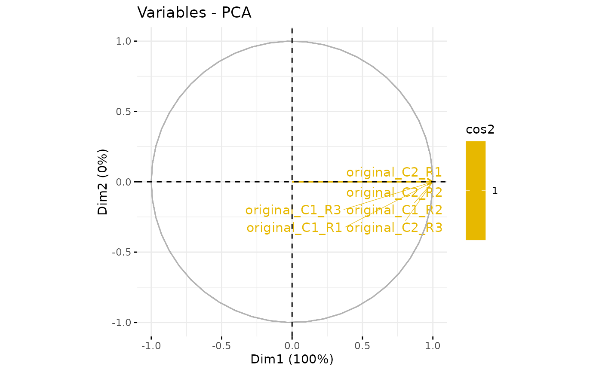
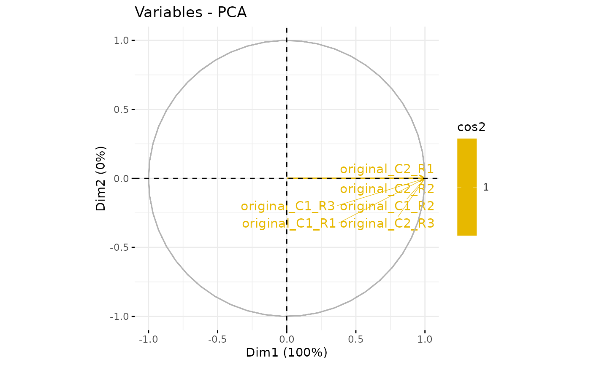

Process a PCA, using nipals or FactoMineR, on a quantitative dataset.
This method plots a bar plot which represents the distribution of the number of missing values (NA) per lines (ie proteins).
wrapper_pca()plotPCA_Eigen_hc(): plots the eigen values of PCA with the highcharts libraryplotPCA_Eigen(): plots the eigen values of PCAplotPCA_Var()plotPCA_Ind()
my_PCA(
X,
scale.unit = TRUE,
ncp = min(12, nrow(X) - 1, ncol(X)),
ind.sup = NULL,
quanti.sup = NULL,
quali.sup = NULL,
row.w = NULL,
col.w = NULL,
graph = FALSE,
axes = c(1, 2),
approach = "FM",
gramschmidt = TRUE
)
omXplore_pca_ui(id)
omXplore_pca_server(id, dataIn, i)
omXplore_pca(dataIn, i)
wrapper_pca(
qdata,
group,
var.scaling = TRUE,
ncp = NULL,
approach = "FM",
gramschmidt = TRUE
)
plotPCA_Eigen(res.pca)
plotPCA_Var(res.pca, chosen.axes = c(1, 2))
plotPCA_Ind(res.pca, chosen.axes = c(1, 2))
plotPCA_Eigen_hc(res.pca)Arguments
- X
a data.frame() of quantitative data
- scale.unit
- ncp
- ind.sup
- quanti.sup
- quali.sup
- row.w
- col.w
- graph
- axes
- approach
a string corresponding to the package to use for PCA (if no
NA, default is "FM" for FactoMineR)- gramschmidt
A boolean indicating whether to use Gram-Schmidt orthogonalization or not.
- id
A
character(1)which is the id of the shiny module.- dataIn
An instance of the class
MultiAssayExperiment.- i
An integer which is the index of the assay in the param obj
- qdata
A data.frame() of quantitative data
- group
A vector with the name of samples
- var.scaling
A boolean indicating whether to scale the data or not
- res.pca
The result of the function
FactoMineR::PCA()- chosen.axes
See the parameter 'axes' of the function
factoextra::fviz_pca_var()
Value
res.pca a "PCA" "list" object
NA
NA
A shiny app
The result of the function FactoMineR::PCA()
A plot
A plot
A plot
A plot
Examples
data(vdata)
obj <- vdata[[1]]
res.pca <- my_PCA(SummarizedExperiment::assay(obj), approach = "FM")
plotPCA_Eigen(res.pca)
plotPCA_Var(res.pca)
 plotPCA_Eigen_hc(res.pca)
plotPCA_Ind(res.pca)
plotPCA_Eigen_hc(res.pca)
plotPCA_Ind(res.pca)
 if (FALSE) { # \dontrun{
data(vdata)
library(shiny)
library(QFeatures)
library(shinyWidgets)
library(dplyr)
library(highcharter)
# Replace missing values for the example
sel <- is.na(SummarizedExperiment::assay(vdata, 1))
SummarizedExperiment::assay(vdata[[1]])[sel] <- 0
SummarizedExperiment::assay(vdata[[1]])[1,1] <- NA
omXplore_pca(vdata, 1)
} # }
data(vdata)
obj <- vdata[[1]]
res.pca <- wrapper_pca(qdata=SummarizedExperiment::assay(obj), group=get_group(obj))
plotPCA_Eigen(res.pca)
plotPCA_Var(res.pca)

plotPCA_Eigen_hc(res.pca)
plotPCA_Ind(res.pca)
if (FALSE) { # \dontrun{
data(vdata)
library(shiny)
library(QFeatures)
library(shinyWidgets)
library(dplyr)
library(highcharter)
# Replace missing values for the example
sel <- is.na(SummarizedExperiment::assay(vdata, 1))
SummarizedExperiment::assay(vdata[[1]])[sel] <- 0
SummarizedExperiment::assay(vdata[[1]])[1,1] <- NA
omXplore_pca(vdata, 1)
} # }
data(vdata)
obj <- vdata[[1]]
res.pca <- wrapper_pca(qdata=SummarizedExperiment::assay(obj), group=get_group(obj))
plotPCA_Eigen(res.pca)
plotPCA_Var(res.pca)

plotPCA_Eigen_hc(res.pca)
plotPCA_Ind(res.pca)